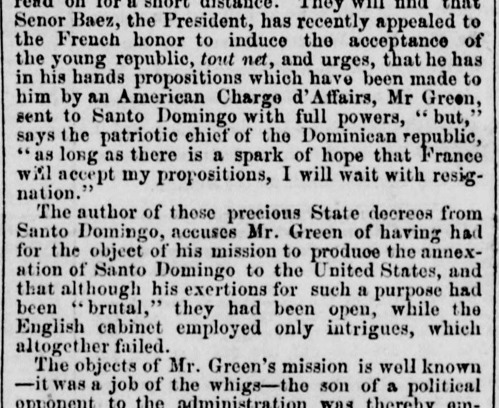
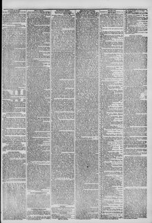

The French honor to induce tho acceptance of the young ropublicEl honor francés para inducir la aceptación de la joven república
The New York Herald. New York [N.Y.], April 21, 1852. Page 3. View the originalVer el original


See the full pageVer la página completaAccording to The New York Herald on April 21, 1852, the Dominican Republic's leader awaited a response regarding French proposals while noting that American Chargé d'Affaires Mr. Green had been sent with full powers. The newspaper's correspondent stated that while the Dominican chief accused Mr. Green's mission of seeking annexation, the correspondent observed that Green never aimed for annexation during his stay. Additionally, the excerpt attributes Green's appointment to a Whig administration stratagem involving a political opponent's son, while also mentioning failed British intrigues and the Dominican Minister of Foreign Affairs, Dr. Caminero.A tenor de The New York Herald del 21 de abril de 1852, el mandatario dominicano aguardaba respuesta a propuestas formuladas por Francia, observando que el encargado de negocios estadounidense, Sr. Green, había sido acreditado con plenos poderes. El corresponsal del diario señaló que, aunque el jefe dominicano imputaba a la misión de Green designios de anexión, jamás se advirtió en su gestión tal pretensión durante su estancia. El extracto atribuye la designación de Green a una estratagema del gobierno whig ligada al hijo de un rival político, aludiendo asimismo a intrigas británicas fallidas y a la intervención del ministro de Relaciones Exteriores dominicano, Dr. Caminero.